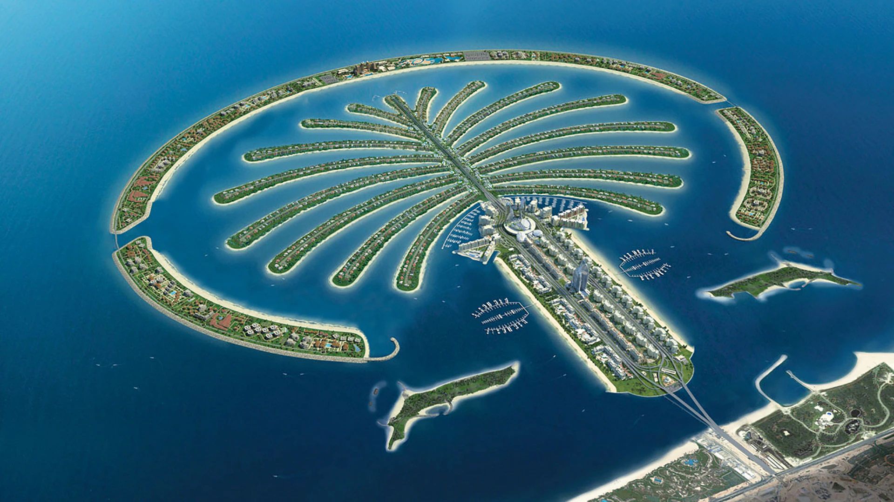

DUBAI
L' architecture à Dubai est absolument incroyable !
Les gratte-ciels audacieux et innovants défient les lois de la gravité.
Des structures emblématiques comme le Burj Khalifa, le Burj Al Arab et le Palm Jumeirah sont de véritables chefs-d'œuvre architecturaux.
Chaque bâtiment est conçu avec une attention méticuleuse aux détails et une vision .
Les formes uniques, les matériaux luxueux et les façades étincelantes font de Dubai un véritable paradis pour les amateurs d'architecture.
Que tu sois fasciné par les designs futuristes ou les structures traditionnelles revisitées, Dubai offre une diversité architecturale impressionnante.
C'est un véritable terrain de jeu pour les architectes du monde entier.
BURJ KHALIFA
le Burj Khalifa est l'un des symboles les plus emblématiques de Dubai.
Cette incroyable tour s'élève majestueusement dans le ciel, atteignant des hauteurs vertigineuses.
Avec ses 828 mètres de hauteur, c'est le plus haut bâtiment du monde.
Le Burj Khalifa offre une vue imprenable sur la ville et ses environs depuis son observatoire situé au 148ème étage.
C'est un véritable chef-d'œuvre architectural, avec son design élégant et ses lignes modernes.
Il est impossible de ne pas être émerveillé par sa grandeur et sa beauté.
C'est une expérience unique qui te laissera des souvenirs inoubliables.
BURJ-AL-ARAB

Le Burj Al Arab , C'est l'un des hôtels les plus emblématiques de Dubaï.
Avec sa forme de voile de bateau et son luxe extravagant,
c'est vraiment un endroit unique la vue depuis le sommet est incroyable.
PALM JUMEIRAH
L'Hôtel Palm Dubai est un endroit magnifique situé sur la célèbre île artificielle,
Palm Jumeirah, à Dubaï.
C'est un complexe hôtelier de luxe qui offre des vues spectaculaires sur la mer et des services de classe mondiale.